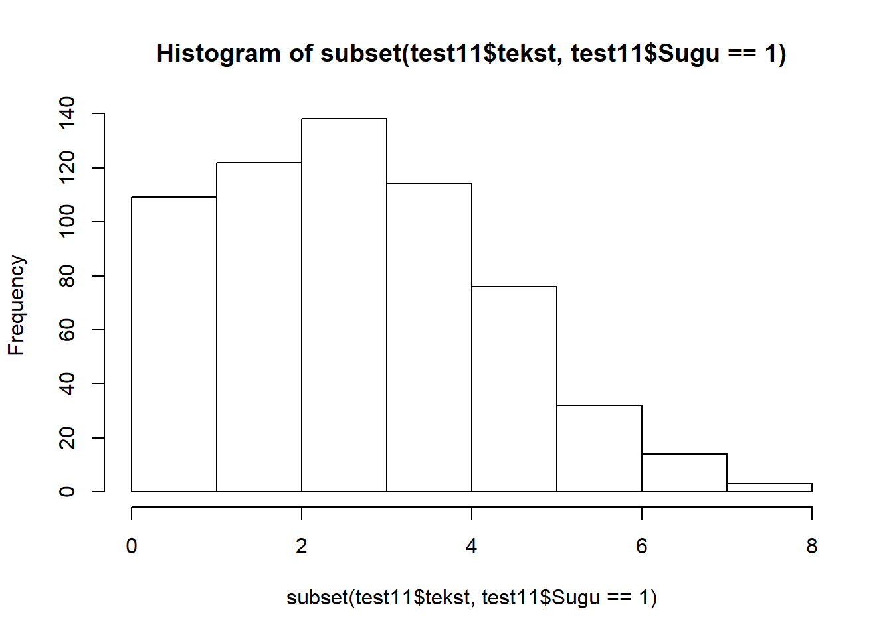
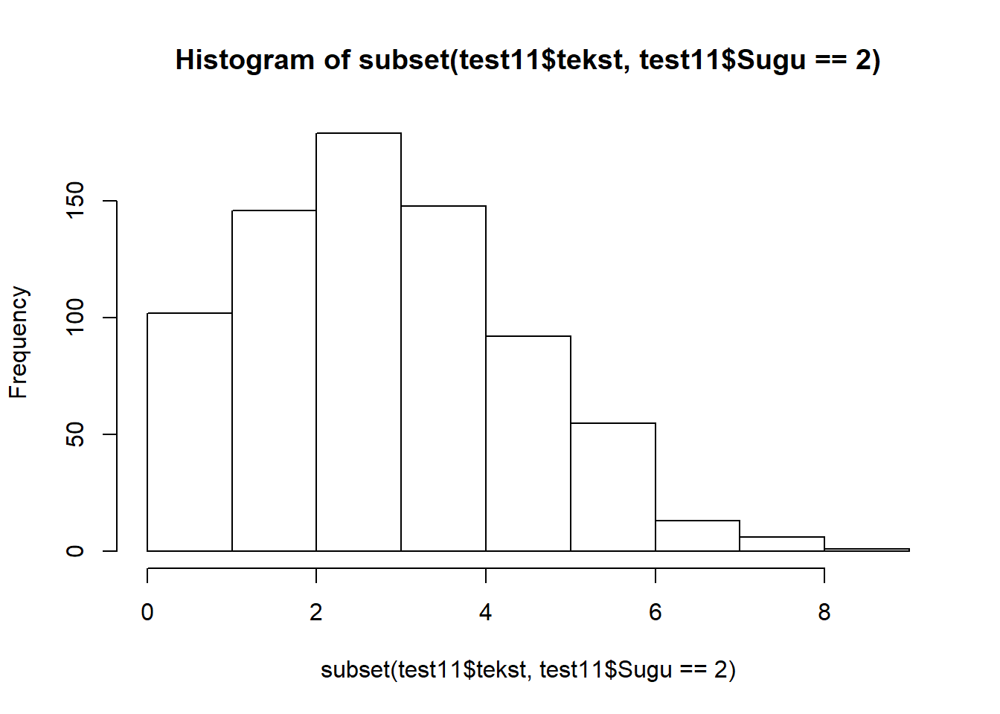

Keskmiste võrdlemine
Martin Kolnes
Selle praktikumi eesmärkideks on läbi teha järgmised tegevused:
(1) kahe sõltumatu grupi keskmiste võrdlemine parameetrilise ja mitteparameetrilise testiga (t test),
(2) kahe sõltuva grupi keskmiste võrdlemine parameetrilise ja mitteparameetrilise testiga,
 (3) rohkem kui kahe grupiga keskmiste võrdlemine parameetrilise (ANOVA) ja mitteparameetrilise (Kurskal-Wallis) testiga.
(3) rohkem kui kahe grupiga keskmiste võrdlemine parameetrilise (ANOVA) ja mitteparameetrilise (Kurskal-Wallis) testiga.
Kordamine
Laadige andmestik test11.csv RStudiosse.
Ülesanne 1. Leidke meeste ja naiste keskmised teksti mõistmise ja matemaatika ülesannetes (1 = M, 2 = N).
NB! Kasutage subset() funktsiooni ainult ühe kategooria andmete valimiseks. Esimene argument on meid huvitav tunnus, teise argumendiga määrame kategooria väärtuse:
#subset(tunnus, kategooria == väärtus) # topelt võrdusmärk tähedab, otsime täpselt antud väärtusega andmeid
subset(test11$tekst, test11$Sugu == 1)# see annab meile teksti mõistmise tulemused kategooria 1 kohta ehk meeste teksti mõistmise tulemsued.
subset(test11$tekst, test11$Sugu == 2)# see annab meile teksti mõistmise tulemused kategooria 2 kohta ehk naiste teksti mõistmise tulemsued.T-testi eeldused
Tuletame meelde t-testi eeldused:
1.Andmed on vähemalt intervall skaalal.
1.1 Sõltuvate rühmade t-testi puhul peab olema normaaljaotusega jaotus, mis on moodustatud järgmiselt: ühel korral mõõdetud tulemustest on lahutatud teisel korral mõõdetud tulemused.
1.2 Sõltumatu t-testi puhul peab tunnus rühmade lõikes olema normaaljaotusega, samuti peavad rühmade dispersioonide olema homogeensed (ning valimid peavad olema sõltumatud).
Selle praktikumi jooksul me ei jõu kahjuks iga ülesande puhul eeldusi kontrollida. Toon siia t-testi eelduste kontrolli, mida tuleks teha ülesande 2 puhul. Selles ülesandes vaatame teksti mõistmise tulemusi sugude lõikes.
Kas uuritav tunnus on rühmade lõikes normaaljaotusega?
Shapiro Wilki test üks levinumaid statistilisi meetodeid normaaljaotuse kontrollimiseks. Väljundist tuleb vaadata p-value-t. Kui p-value on väiksem kui 0.05, siis ei ole andmed selle testi kohaselt normaaljaotuslikud.
# Kontrollime meest(1) puhul tunnuse "tekst" normaaljaotust:
shapiro.test(subset(test11$tekst, test11$Sugu == 1))##
## Shapiro-Wilk normality test
##
## data: subset(test11$tekst, test11$Sugu == 1)
## W = 0.9577, p-value = 3.288e-12# Kontrollime naiste(2) puhul tunnuse "tekst" normaaljaotust:
shapiro.test(subset(test11$tekst, test11$Sugu == 2))##
## Shapiro-Wilk normality test
##
## data: subset(test11$tekst, test11$Sugu == 2)
## W = 0.96074, p-value = 3.349e-13Praktikas on omajagu harv normaaljaotustestide põhjal leida normaaljaotuslikkust – levinud on asümmeetriakordaja (skewness) ning ekstsessi (kurtosis) vaatamine. Andmeid peetakse normaaljaotuslikult siis, kui nii asümmeetriakordaja kui ka järsakusaste/ekstsess on vahemikus (-0.5;0.5); liberaalsemalt on aga levinud ka vahemike (-1; 1) kasutamine (Fieldi õpiku näide).
Vaatame, kuidas asümmeetrijakordajat (skew) ja ekstsessi (kurtosis) arvutada.
Selleks kasutame funktsiooni describe(), mis on paketi psych funktsioonide komplektis. Esmalt peame selle paketi enda arvutisse installeerima. See käib läbi RStudio konsooli:
install.packages("psych")#kirjutage see rida RStudio konsoolile. Paketi installeerimise peale võib minna natuke aega.Nüüd saame kasutada funktsiooni describe. Sellele funktsioonile anname argumendiks ühe grupi andmed.
library(psych)#selle käsuga teeme antud paketi funktsioonide aktiivseks
describe(subset(test11$tekst, test11$Sugu == 1))#meeste andmed## vars n mean sd median trimmed mad min max range skew kurtosis se
## X1 1 608 3.12 1.66 3 3.05 1.48 0 8 8 0.31 -0.34 0.07describe(subset(test11$tekst, test11$Sugu == 2))#naiste andmed## vars n mean sd median trimmed mad min max range skew kurtosis se
## X1 1 742 3.28 1.65 3 3.22 1.48 0 9 9 0.3 -0.16 0.06Teeme ka histogrammi, et saada jaotusest parem mulje.
hist(subset(test11$tekst, test11$Sugu == 1))
hist(subset(test11$tekst, test11$Sugu == 2))
Kas rühmade dispersioonid on homogeensed?
Selle eelduse testimiseks kasutame funktsiooni leveneTest(), mis on paketi car funktsioonide komplektis. Esmalt peame selle paketi enda arvutisse installeerima. See käib läbi RStudio konsooli:
install.packages("car")Nüüd saame kasutada funktsiooni leveneTest. Esimeseks argumendiks paneme sõltuva muutuja ja teiseks kategoriseeriva tunnuse.
library(car)
leveneTest(test11$tekst, test11$Sugu)## Levene's Test for Homogeneity of Variance (center = median)
## Df F value Pr(>F)
## group 1 0.0857 0.7697
## 1348Sõltumatute gruppidega t-test
Parameetriline
Avage andmefail test11.
Ülesanne 2. Uurige hüpoteesi: naiste teksti mõistmise testi tulemus on statistiliselt oluliselt parem kui meeste oma.
Selle testi tegemiseks kasutame funktsiooni t.test():
t.test(y~x), kus y on numbriline tunnus ja x on kategooria (binaarne).
# kahe sõltumatu grupiga t-test
t.test(test11$tekst ~ test11$Sugu) ##
## Welch Two Sample t-test
##
## data: test11$tekst by test11$Sugu
## t = -1.8692, df = 1293.9, p-value = 0.06182
## alternative hypothesis: true difference in means is not equal to 0
## 95 percent confidence interval:
## -0.346850887 0.008380891
## sample estimates:
## mean in group 1 mean in group 2
## 3.115132 3.284367Ülesanne 3. Uurige hüpoteesi: meeste ja naiste keskmised tulemused matemaatika testis on erinevad.
# kahe sõltumatu grupiga t-test
t.test(test11$matemaatika ~ test11$Sugu) ##
## Welch Two Sample t-test
##
## data: test11$matemaatika by test11$Sugu
## t = 9.1097, df = 1198.4, p-value < 2.2e-16
## alternative hypothesis: true difference in means is not equal to 0
## 95 percent confidence interval:
## 1.654612 2.562937
## sample estimates:
## mean in group 1 mean in group 2
## 9.460526 7.351752Mitteparameetriline
Avage andmefail koolid.csv.
Ülesanne 4. Kas antisotsiaalsuse (tunnus “antisotsiaalsus2”“) keskmised tulemused erinevad sugude lõikes?
Selle testi tegemiseks kasutame Mann-Whitney U testi. R-is saame seda teha funktsiooniga wilcox.test():
wilcox.test(y ~ x), kus y on numbriline tunnus ja x on kategooria (binaarne).
# kahe sõltumatu grupiga Mann-Whitney U Test
wilcox.test(koolid$antisots2 ~ koolid$sugu) ##
## Wilcoxon rank sum test with continuity correction
##
## data: koolid$antisots2 by koolid$sugu
## W = 8970.5, p-value = 2.673e-06
## alternative hypothesis: true location shift is not equal to 0Sõltuvate gruppidega t-test - AUhinnangud
Avage andmefail AUhinnangud.csv.
Tegemist on ühe koolitöö raames kogutud andmestikuga, milles näidati naisterahvastele 10 mehe pilte, mida paluti atraktiivsuse (A) ja usaldusväärsuse (U) 10-palli-skaalal hinnata. Igast pildist oli 2 versiooni: (1) ühel juhul vaatas isik otse, (2) teisel juhul oli pilti töödeldud nii, et pilk oli suunatud kõrvale (andmestikus on märge a, mis tuleneb ingliskeelsest sõnast averted). Hüpoteesideks oli, et otsepilguga pilte hinnati keskmiselt (H1) atraktiivsemaks ning (H2) usaldusväärsemaks. Kas need hüpoteesid leidsid kinnitust ka andmestikust?
Katsetingimuste keskmised tulemused on juba välja arvutatud:
1) U_kesk - usaldusväärsuse hinnang, isik pildil vaatas otse
# Arvutuskäigu näide:
# loob andmestikku uue veeru nimega "U_kesk"
AUhinnangud$U_kesk = mean(U1.1,U1.2,U1.3,U1.4,U1.5,U1.6,U1.7,U1.8, U1.9, U1.10, na.rm =TRUE) #na.rm =TRUE - arvutuskäik ignoreerib puuduvaid väärtusi- U_kesk_a - usaldusväärsuse hinnang, isik pildil vaatas kõrvale
- A_kesk - atraktiivsuse hinnang, isik pildil vaatas otse
- A_kesk_a - atraktiivsuse hinnang, isik pildil vaatas kõrvale
Parameetriline
Ülesanne 5. Uurige välja, kas hüpoteesid leidsid kinnitust. Esialgu võrrelge omavahel usaldusväärsuse hinnanguid erinevates katsetingimustes (pilk suunatud otse vs pilk suunatud kõrvale). Seejärel võrrelge omavahel ka atrkatiivsuse hinnanguid erinevates katsetingimustes. Nende testide tegemiseks kasutame sõltuvate valimitega t-testi.
Selle testi tegemiseks kasutame funktsiooni t.test(), aga seekord lisame argumendi “paired=TRUE”:
t.test(y1,y2,paired=TRUE), kus y1 ja y2 on mõlemad numbrilised muutujad
# sõltuvate gruppidega t-test
t.test(AUhinnangud$U_kesk, AUhinnangud$U_kesk_a,paired=TRUE) ##
## Paired t-test
##
## data: AUhinnangud$U_kesk and AUhinnangud$U_kesk_a
## t = 5.0326, df = 29, p-value = 2.317e-05
## alternative hypothesis: true difference in means is not equal to 0
## 95 percent confidence interval:
## 0.2235895 0.5297438
## sample estimates:
## mean of the differences
## 0.3766667# sõltuvate gruppidega t-test
t.test(AUhinnangud$A_kesk, AUhinnangud$A_kesk_a,paired=TRUE) ##
## Paired t-test
##
## data: AUhinnangud$A_kesk and AUhinnangud$A_kesk_a
## t = 4.9505, df = 29, p-value = 2.911e-05
## alternative hypothesis: true difference in means is not equal to 0
## 95 percent confidence interval:
## 0.2347442 0.5652558
## sample estimates:
## mean of the differences
## 0.4Mitteparameetriline
Kui parameetrilise testi eeldused on rikutud, siis tuleks siinkohal kasutada Wilcoxon Signed Rank testi.
Ülesanne 6. Võrrelge nii atraktiivsusele kui ka usaldusväärsusele antud hinnaguid ka mitteparameetriliste testidega. Mille poolest tulemused erinevad?
Selle testi tegemiseks kasutame funktsiooni jälle wilcox.test(), aga seekord lisame argumendi “paired=TRUE”:
wilcox.test(y1,y2,paired=TRUE), kus y1 ja y2 on mõlemad numbrilised muutujad
# kahe sõltuva grupiga Wilcoxon Signed Rank Test
wilcox.test(AUhinnangud$U_kesk, AUhinnangud$U_kesk_a,paired=TRUE) # kahe sõltuva grupiga Wilcoxon Signed Rank Test
wilcox.test(AUhinnangud$A_kesk, AUhinnangud$A_kesk_a,paired=TRUE) Keskmiste võrdlemine rohkem kui 2 rühma korral
Sageli hõlmavad eksperimentaalsed uuringud enam kui kahe grupi või tingimuse võrdlusi. Näiteks võib ravimiuurijaid huvitada, kas (a) ravim on parem kui platseebo ning (b) kui suur doos ravimit on parima mõjuga? Tihtipeale võrreldakse sellistes olukordades nt kolme gruppi – platseebot saanud, madala ning kõrge doosiga eksperimentaalsed rühmad. Dispersioonanalüüsi saab kasutada mitme grupi võrdlemisel.
Ravimiuuringud on ilmselt üks lihtsamini näitlikustatav valdkond dispersioonanalüüsi ehk ANOVA (ANalysis Of VAriance) kasutamisest. Aga samuti on see meetod üsna laialt kasutatav erinevates mitut gruppi (st enamat kui kahte gruppi) võrdlevates uuringutes.
Parameetriline
Avage andmefail iqdata.csv.
Tegemist on simuleeritud andmestikuga tudengite kohta; muutujateks on eriala, IQ skoor ning vanus. Andmestiku allikas: http://staff.bath.ac.uk/pssiw/stats2/page16/page16.html
Ülesanne 7. Püstitage hüpotees gruppidevaheliste (eriala) erinevuste kohta ning testige hüpoteesi.
Selle testi tegemiseks kasutame funktsiooni aov(): aov(y ~ A, data=mydataframe), kus y on sõltuv tunnus ja A on sõltumatu muutuja ehk erinevad grupid.
mudel = aov(iq~group, data = iqdata)#loome ANOVA mudeli ja salvestame selle endale objekti nimega "mudel"
summary(mudel) # funktsiooniga summary saame kätte meie analüüsi tulemused## Df Sum Sq Mean Sq F value Pr(>F)
## group 2 1529 764.7 20.02 7.84e-07 ***
## Residuals 42 1604 38.2
## ---
## Signif. codes: 0 '***' 0.001 '**' 0.01 '*' 0.05 '.' 0.1 ' ' 1Mitteparameetriline
ANOVA mitteparameetriliseks analoogiks on Kruskall-Wallis test. Ülesanne 8. Testige hüpoteesi ka mitteparameetrilise testiga.
Selle testi tegemiseks kasutame funktsiooni kurskal.test():
kruskal.test(y ~ A, data=mydataframe), kus y on sõltuv tunnus ja A on sõltumatu muutuja ehk erinevad grupid.
kruskal.test(iq ~group, data = iqdata) ##
## Kruskal-Wallis rank sum test
##
## data: iq by group
## Kruskal-Wallis chi-squared = 29.205, df = 2, p-value = 4.552e-07